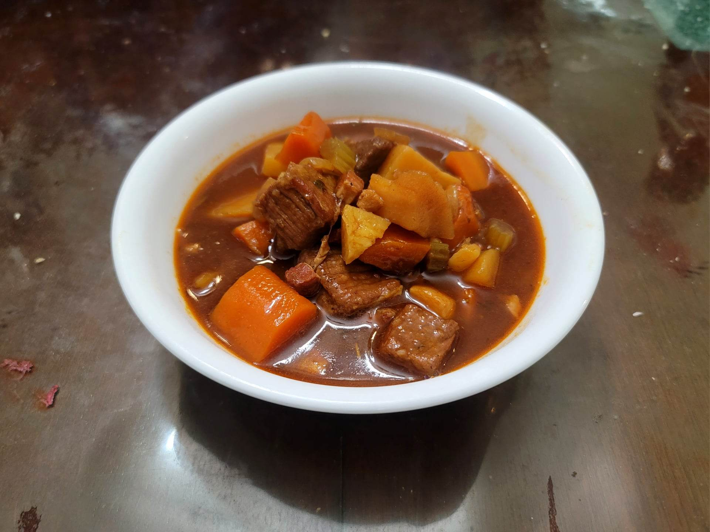

Beef and Guinness Stew

Ingredients:
- 2 lb Beef chuck, cubed
- 6 oz Bacon, diced
- 3 tbsp Flour
- Salt, to taste
- Black pepper, to taste
- 2 Yellow onions, sliced
- 3 cloves Garlic, minced
- 4 Golden potatoes, cubed 1"
- 2 large Carrots, chopped 1/2"
- 2 ribs Celery, chopped 1/2"
- 1 large Parsnip, chopped 1/2"
- 16 oz Guinness
- 1 cup Beef broth
- 2 tbsp Worcestershire sauce
- 1/4 cup Tomato paste
- 1 tsp Dried thyme
- 1 tsp Dried rosemary
- 1/2 tbsp Salt
- 1/4 tsp Black pepper
- 2 Bay leaves
Instructions:
- Season the beef with salt and pepper to taste and the flour.
- Place the bacon into a cold pot and then place over medium heat. Fry until the fat renders and the bacon is crispy. Reserve the bacon, leaving the fat in the pot.
- In batches, brown the beef on all sides. Then transfer to a plate and reserve.
- Add the onions and sauté until lightly browned, about 10 minutes. Then add in the garlic and sauté another minute. Add in carrots, celery, parsnip, and potatoes and sauté until starting to soften, about 5 minutes.
- Add the guinness and bring to a boil. Deglaze the bottom of the pot. Let boil for 2 minutes.
- Add the beef and bacon back to the pot, along with the rest of the ingredients. Bring to a boil and then reduce to low. Cover and simmer for 2 hours.
- Taste and add salt and pepper if needed. Serve immediately with crusty bread.